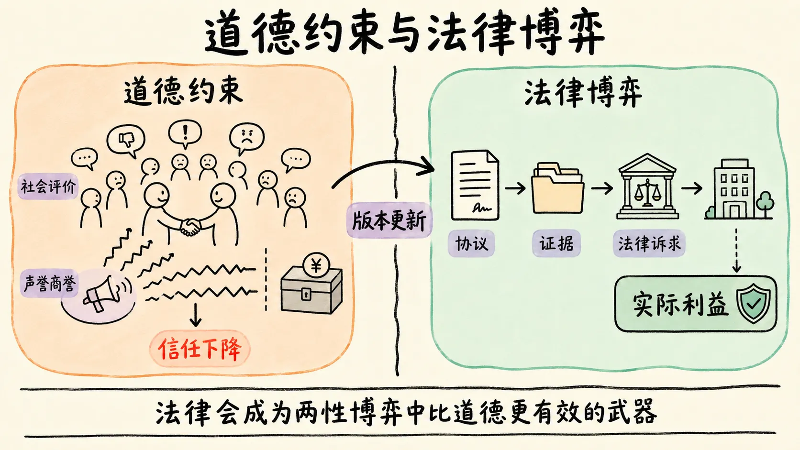
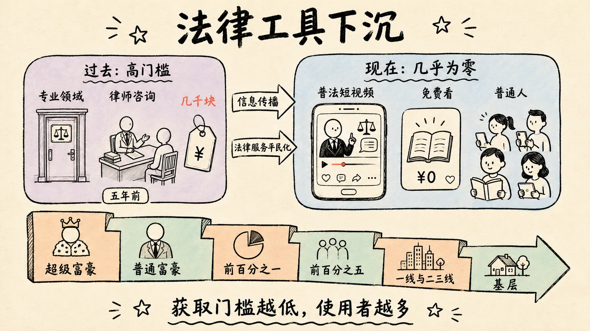
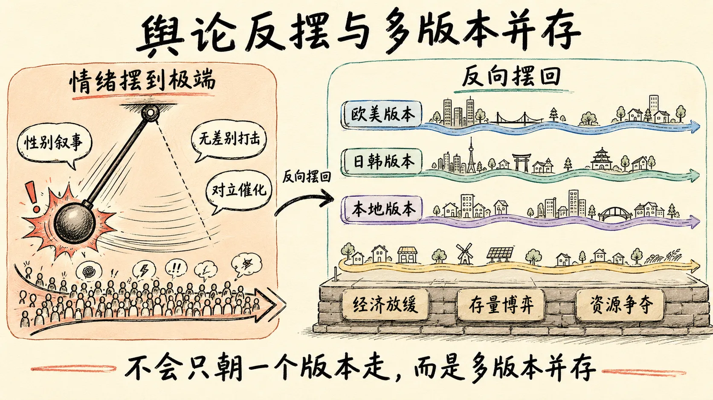
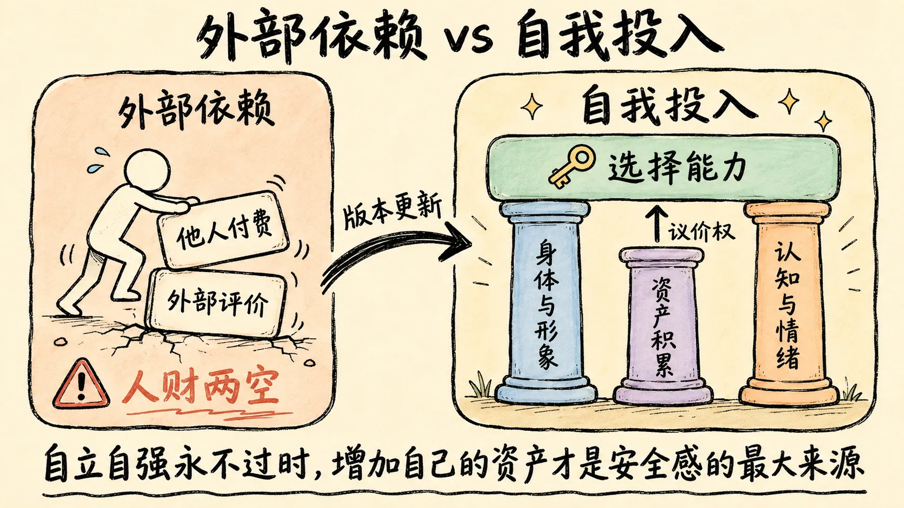
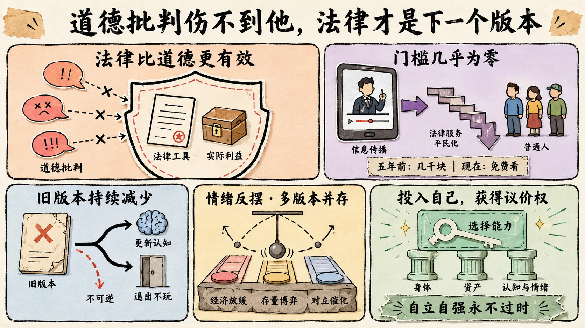

先更新版本认知
调查时我刷到过一个视频：一位年纪不小、应该很有社会阅历的女性博主，对这件事的结论是孙宇晨太抠门、不愿给景甜多花钱，评论区大量赞同。
我想对所有看我视频的女性观众说一句：如果你有这种想法，建议尽可能在三到五年内修正它。
不是因为这个想法在道德上有问题——每个人都可以有自己的感情和金钱观——而是版本更新会很快，停留在这个版本的人会遇到非常多问题：轻则人财两空的概率越来越高，重则被倒打一耙进监狱。
道德批判伤不到他的实际利益
传统社会有个底层共识：你对一个有过亲密关系的女性采取非常绝情的方式，即使法律上站得住脚，周围的人也会降低对你的信任——连感情关系都能这样算，和他做生意呢？
于是声誉商誉受损。
这个共识运行了几十年，本质是用社会压力补充法律覆盖不到的地方：法律管不了道德，但社会评价可以。
现在不同了。
孙宇晨这个案例展示了一种新可能：在法律上把每一步走干净，让道德批判在实操层面没有操作空间。
你可以骂他不道德，但他的交易所照常运营、资产照常增值、法律诉求照常推进，道德批判伤不到他的实际利益。

这不是孤例——郎咸平的案例很多人都知道，和前任的财务纠纷经法律手段操作，结果让旁观者瞠目结舌。
现在的趋势是：婚检、儿女 DNA 检测、婚前财产分割协议，各种普通家庭平时见不到的法律手段和套路，正从专业领域向普通人扩散。
简单概括：
我把你玩完了，还要你倾家荡产赔我钱。
这句话十年前没人信，现在正在一步步实现。
法律武器的获取门槛降到几乎为零
过去法律武器化主要发生在超级富豪层面，但这个东西会向下传导：超级富豪到普通富豪，到前百分之一收入群体，到前百分之五，到超一线城市的大多数普通人，到一线、二三线城市，再到基层。
传导速度取决于两个因素：信息传播，和法律服务的平民化。
抖音上大量律师做普法短视频，教你婚前协议怎么写、婚前财产怎么保护、证据怎么取——这些知识五年前要花几千块咨询律师，现在免费看视频就能学到。
法律武器的获取门槛降到几乎为零，使用者数量就会急剧增加。

旧版本男性是消耗品
再说一句很难听的话：国内女性目前最大的红利不仅是年纪，更是一群还处于旧版本的男性。
他们活在过去的版本里，行为模式、对感情金钱的认知、对法律工具的了解，都停留在上一个时代。
你领先一个版本，就能把他捏扁搓圆。
但这批人像消耗品，捏一次少一个：要么被你搞得彻底失去经济价值、沉到社会底层，要么在这个过程中清醒、更新认知进入下一个版本——下个版本的他，要么捏不动，要么直接退出不玩。
这批人持续减少，而每个被坑过的人都会成为新版本的传播者，把自己的经历讲给兄弟、同事、朋友，后者更新更快。
这是不可逆的。
日本女明星为什么嫁给普通人
可以参考日本：为什么不少女明星退役后找个普通人——所谓社畜——结婚？
因为行业生态里能匹配她们社会地位的男性，要么完成了全面的自我保护，要么本身精于算计，和这些人在一起每一步都是博弈；反而是普通人——收入不高但稳定，不用法律武器，感情认知朴素——在情感体验上最舒适。
前提是她自己已有足够经济基础，不需要靠婚姻获得财务安全。
前辈们把路堵得差不多了
找老外呢？
对不起，你的前辈们已经把路堵得差不多了。
老外对国内女性的态度近十年变化很大：一边是越来越多真实案例在海外社交媒体传播，一边是中国女性在海外的行为模式形成了刻板印象。
背后有：
- 逆种族主义——认为白人男性天然比亚洲男性优越，所以更容易接受更不利的交往条件
- 辉格史观——认为西方社会天然更进步，所以那里一切都更好
- 还有一种缺少智力支撑的崇拜——不判断对方的能力人品，只因为种族和国籍就崇拜
结果越来越多老外找中国异性的目的，从喜欢一个不同文化的外乡人，变成免费找一个解决生理需求的饭票。
去工作这条路，也要出新版本了
回归生产、去工作这条路，也要出新版本了。
日本的经验是：经济停滞的三十年里女性职场参与率确实上升，但方式不是越来越多女性当上高管，而是大量进入非正规就业、派遣用工和零工经济，收入和职业前景与正规雇员差距很大。
这不是一个只要努力就能解决一切的简单叙事。
性别叙事是无差别打击
古话讲盛极而衰。
二〇一五年之前，两性话题里有大量同情女性的言论，也有大量操控女性、骗人骗财的案例。
那时有正常价值观的人都会支持女性，因为现实中确实有太多女性在感情和经济上被伤害；相当一部分十八到三十五岁的中青年男性是支持者主力——他们也有女儿、有母亲，共情极高。
之后女性权益随生产力、城镇化、社会化程度提升而上升，这本身是好事。
但问题在于，当初支持女性的男性被夹在了中间：渣男没因社会进步消失，反而靠操纵情绪、利用信息差过得更好；捞女也更如鱼得水——只要理由听着没问题，大家就默认支持甚至给钱。
那些真心帮过女性的男性，不仅没被更好对待，还有不少被反向伤害——因为性别叙事不是定向打击，而是无差别打击，支持女性的男性很容易被别有用心的个体抓住破绽。
正向案例很多，但一颗老鼠屎坏了一锅粥，还有人觉得没问题，事情就越来越不可控。
天道奖励行动力强的人
这不是我们独有的：德国、法国、日本、美国，甚至中东、东南亚，都进入了这个版本的前期。
真正有问题的，是捞女、田园、渣男、龟男这些还活在封建版本里的人，不是普通男女。
但普通人会被舆论裹挟去维护这批人的利益，而维护他们的利益就是牺牲自己的利益——这是我觉得最可笑的地方。
为什么？
因为这批人道德底线足够低，欲望很强，行动力更强——而世界，或者说天道，会奖励行动力强的人。
生理性别在未来会逐渐模糊，未来只会有强弱，没有性别。
情绪摆到极端，就会反向摆回来
当然，一切的本质还是经济：增速放缓、存量博弈加剧，每份资源的争夺都更激烈，两性关系不例外，对立只是催化剂。
而未来的舆论也会大变：日本就有一个标志性事件——某电视台高管对旗下记者实施迷奸，社会的反应不是声援受害者，而是大量指责受害女性「是她自己有问题」，大家可以查，叫伊藤诗织事件。
具体细节我后续会深查确认，但它反映的趋势明确：社会对两性议题的情绪摆到一个极端后，会反向摆回来，反弹力度往往超出预期。

他们的诉求在上个版本是对的
简单说，女性的法律地位会不断提高，形成对落后版本男性的降维打击甚至一定程度的磨灭；代价是牺牲相当一部分既得利益——要花更多努力去获取生存资源，你的价值会越来越具现化。
相亲节目里连线的嘉宾上来就说要找 A8、A9，最差也要大 A7——听着离谱，但他们的诉求在上个版本是对的：那时夫妻共同奋斗、互相扶持，能在城市安家，达到 A7；能力强点，有机会摸到 A8。
现在已经不可能了，前辈把路都堵上了。
这个版本还抱着「异性就要给自己多花钱」的心思非常危险——愿意无条件答应这些诉求的只有一种结果：缅北业务员。
自立自强永不过时，增加自己的资产才是安全感的最大来源。

给男性观众的建议
给男性观众的建议：第一，现在发大财的难度越来越高，如果你清楚自己没有百分之一甚至千分之一的能力和运气，那在所有投资里，最有价值的之一一定一定是健身——有一副健硕的身体，愿意研究两性的思维特征，学会控制情绪，用更高的视角看两性话题，才是最好的觉醒：不是仇恨、谁放弃什么，而是把自己变成有选择能力的人。
还想当龟男，结局一样是人财两空。
最近短视频上有个话题是「中国男性娶老挝女性」，推给普通中国男性看娶到年轻漂亮老挝人的视频；但老挝那边已有对应话题：老挝人觉得中国男性把女性单纯当生育机器，生育完态度变差，没有真实情感支撑。
可以预见，老挝面对中国男性的彩礼会不断提高——越南已经开始进入这个版本了。
投入自己，才能拥有议价权
先遣服之一的韩国男性，为什么疯狂健身、医美、穿搭，出门花一小时打扮？
因为他清楚，投入自己才能拥有议价权。
在韩国想让约会对象替你买单？
他只会说凭什么——不让你请客就不错了。
他的逻辑是：我已经是高价值的人，你和我在一起是因为我的吸引力，不是因为我替你付钱。
这在韩国已是主流。
日本男性其实也一样，只是宅文化严重、两性对立没韩国尖锐，加上刻板印象，所以没人察觉。
回忆你看过的日剧：男主性格再好也必须和女主 AA，情侣也 AA；安慰对方时，顺手请喝个自动贩卖机或便利店的饮料。
不花女朋友的钱、不劈腿，在日本已经是好男人；请客反而是没有边界感的行为——这就是下一个版本的预告。
不会只朝一个版本走
总而言之，国内人口众多、领土够大，不会只朝一个版本走，而是多版本并存——欧美日谈的版本都会有。
过程中，法律会成为两性博弈中比道德更有效的武器，掌握这套工具的人正从富豪圈扩展到普通人；孙宇晨和景甜这件事，只是让这个趋势被更多人看到的节点。
后面还会不会有新线索不好说，如果法院出了实体审理结果，或出现真正的一手证据——法院文书、银行流水、原始协议——我会更新或发动态。
这期时间比较紧，很多地方没做得足够仔细，大家看着玩就行了。
